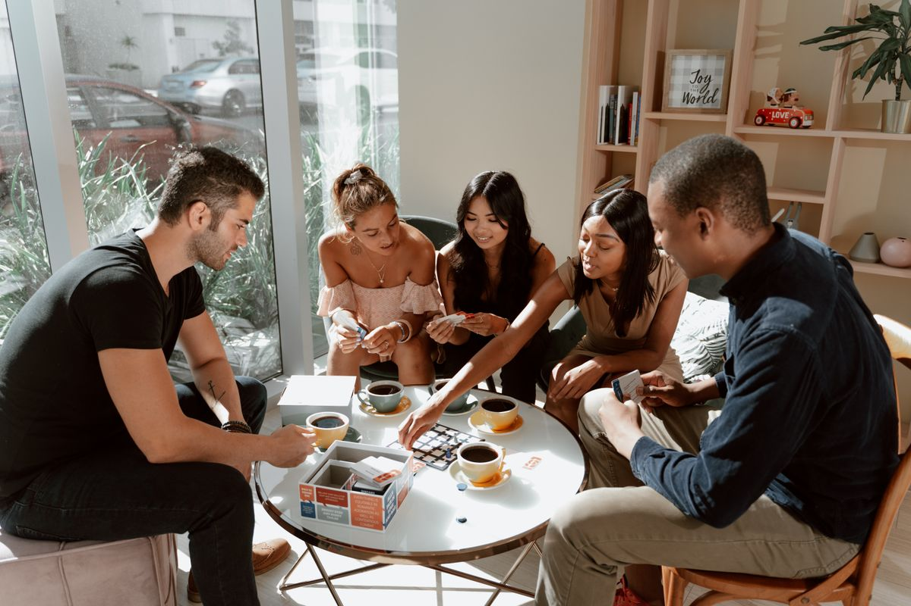
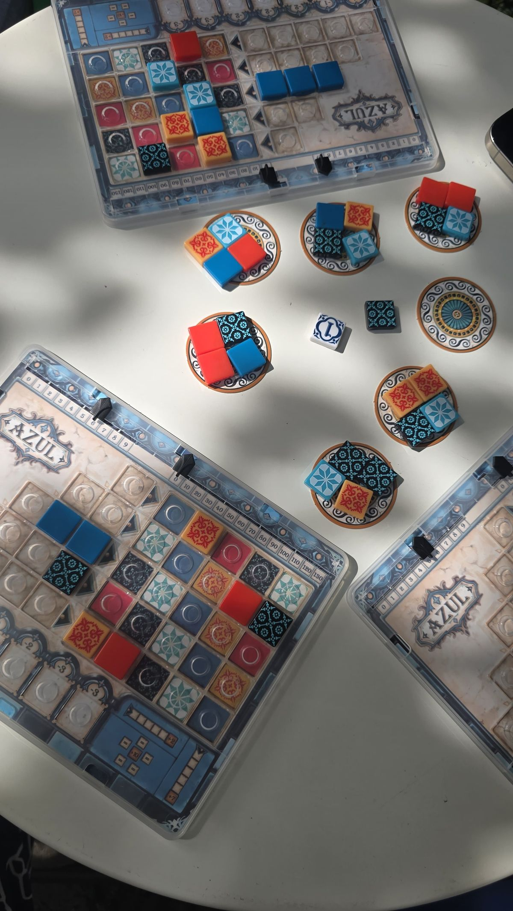
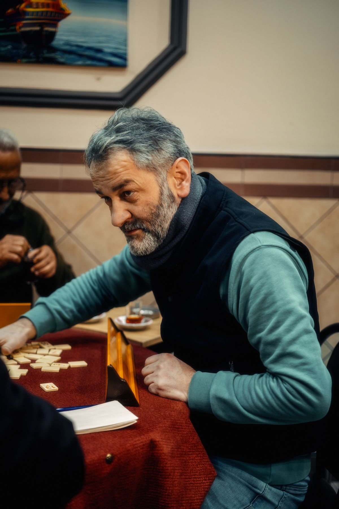
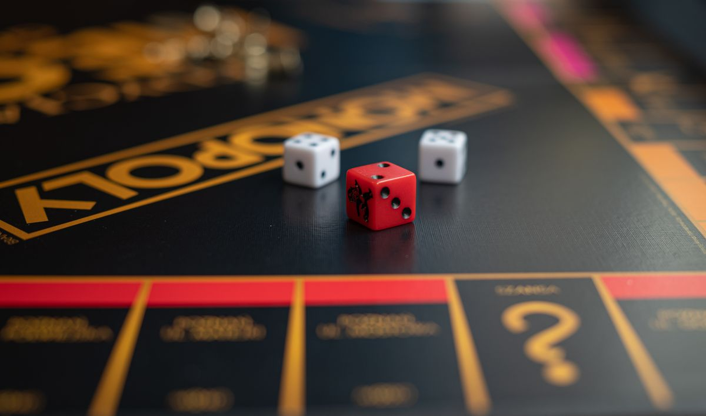
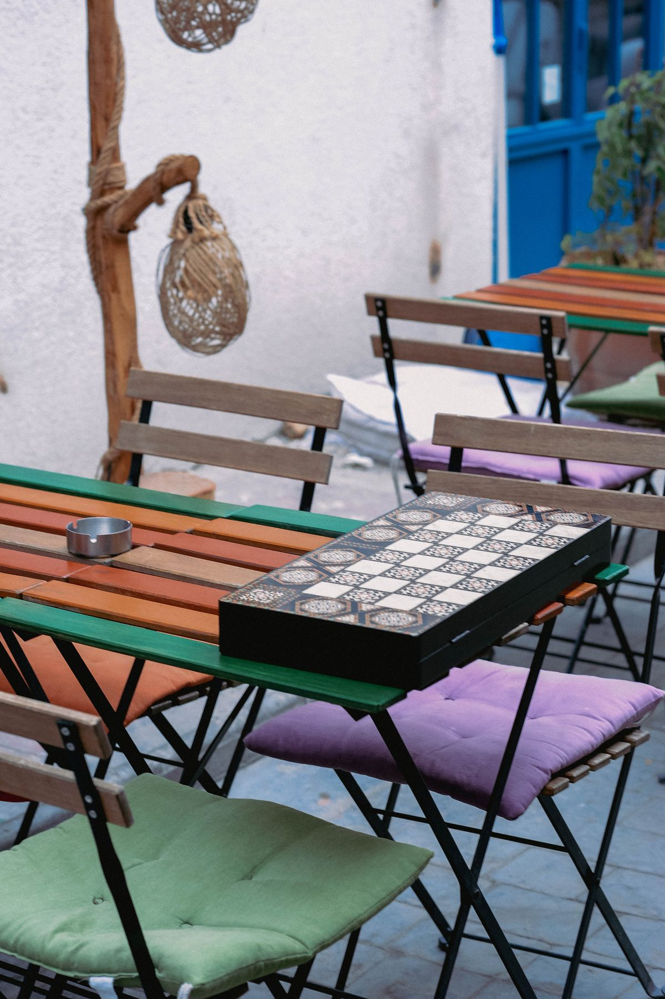
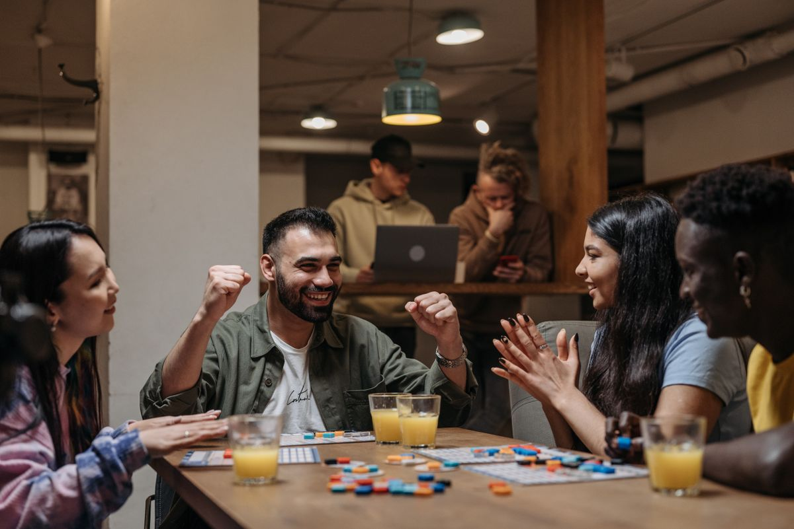

امیرآباد — کارگر شمالی
تهران، خیابان کارگر شمالی، نرسیده به چهارراه نصرت، پلاک ۱۵۱۹
۰۲۱ - ۹۱۰۹۸۸۶۰ رزرو میز در این شعبهکافه بازی سیلک، کافه بردگیم تخصصی تهران است — از بازیهای خانوادگی تا شبهای مافیا و میزهای RPG و D&D، با حیاط روباز برای روزهای خوب. میزتان را همین حالا آنلاین رزرو کنید.

کافه بازی سیلک در دو نقطه تهران میزبان شماست؛ هر دو شعبه با یک شماره تماس و ساعت کاری ۷ صبح تا ۱۲ شب.
تهران، خیابان کارگر شمالی، نرسیده به چهارراه نصرت، پلاک ۱۵۱۹
۰۲۱ - ۹۱۰۹۸۸۶۰ رزرو میز در این شعبهتهران، میدان جهاد، ساختمان فاطمی، پلاک ۱۰۶
۰۲۱ - ۹۱۰۹۸۸۶۰ رزرو میز در این شعبهدر سیلک فقط قهوه و چای نیست؛ یک قفسه بزرگ بازی، برنامههای هفتگی و میزهایی برای بازیهای گروهی و نقشآفرینی.

قفسه بازی سیلک از بازیهای خانوادگی و مهمانی تا بازیهای استراتژیک را دارد؛ برای هر سلیقه و هر جمعی، یک بازی پیدا میشود.

شبهای مافیا در سیلک، دورهمی گروهی پرهیجان است؛ با دوستانتان بیایید و یک شب کامل را پای میز مافیا بگذرانید.

میزهای نقشآفرینی RPG و D&D برای گروههایی که دنبال یک ماجراجویی طولانی و جدی پای میز بازیاند.

حیاط روباز سیلک برای بازی در هوای آزاد است؛ میزهای بیرون، برای روزهایی که هوای تهران خوب است.

سیلک یک کافه بردگیم تخصصی است؛ یعنی میزهای بزرگ، قفسه بازی کامل و فضایی که برای ساعتها بازی گروهی طراحی شده — در دو شعبه فاطمی و امیرآباد.
از بازیهای سبک خانوادگی تا بازیهای استراتژیک سنگین؛ برای هر جمعی یک بازی هست.
برنامههای گروهی و میزهای نقشآفرینی برای کسانی که بازی را جدی میگیرند.
شعبه کارگر شمالی و شعبه میدان جهاد؛ هر دو با شماره ۰۲۱۹۱۰۹۸۸۶۰ و ساعت کاری ۷ صبح تا ۱۲ شب.
فرم همین صفحه را پر کنید؛ شعبه، روز و ساعت را مشخص کنید و ما رزروتان را تأیید میکنیم.
میزهای بزرگ، بازیهای رنگی و جمع دوستانی که دور یک میز جمع شدهاند.



در فرم رزرو، شعبه کارگر یا فاطمی، روز و ساعت و تعداد نفرات را مشخص کنید.
برای تأیید شعبه، روز و ساعت رزرو، با شمارهای که ثبت کردهاید تماس میگیریم.
به شعبه انتخابیتان بیایید؛ میزتان آماده است و قفسه بازی منتظر شماست.
دو شعبه دارد: شعبه کارگر در خیابان کارگر شمالی، نرسیده به چهارراه نصرت، پلاک ۱۵۱۹؛ و شعبه فاطمی در میدان جهاد، ساختمان فاطمی، پلاک ۱۰۶.
هر روز از ۷ صبح تا ۱۲ شب، در هر دو شعبه.
۲۰۰ تا ۵۰۰+ بازی رومیزی؛ از بازیهای خانوادگی و مهمانی تا استراتژیک و نقشآفرینی.
بله؛ شبهای مافیا و میزهای RPG و D&D از برنامههای ثابت کافه بازی سیلک است.
فرم رزرو همین صفحه را پر کنید یا با شماره ۰۲۱۹۱۰۹۸۸۶۰ تماس بگیرید؛ شعبه و روز و ساعت را مشخص کنید تا رزروتان تأیید شود.
فرم را پر کنید؛ برای تأیید شعبه، روز و ساعت رزرو با شما تماس میگیریم. اگر ترجیح میدهید مستقیم صحبت کنیم، تماس بگیرید:
۰۲۱ - ۹۱۰۹۸۸۶۰ اینستاگرام: @sialk_cafe